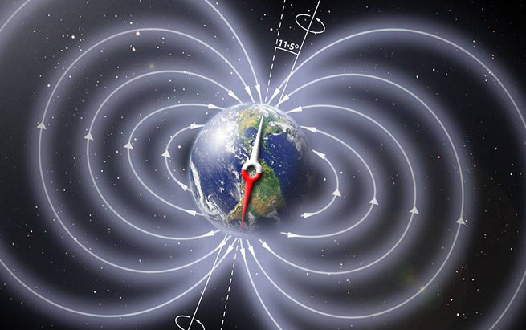

|  |
You’ve probably played with magnets many times in your life. You know that a magnet does not have to actually touch something to exert a pull on it. That is because a magnet is surrounded by a magnetic field. Life is possible on Earth because our planet is surrounded by a magnetic field.
|
|
A simple bar magnet has two poles – a north pole and a south pole. With magnets, opposites attract. The north pole in a magnet is always seeking the south pole, and the south pole is seeking the north pole. These poles pull on each other, creating a magnetic field. The Earth is like a giant bar magnet. It has a north pole and a south pole that are attracted to each other.
|
|
What makes the Earth a magnet? The core of the Earth is made of molten (liquid) iron. It spins around because the Earth rotates. When liquid metal spins this way, it creates a magnetic field. Magnetic fields can also be created by a salty ocean.
|